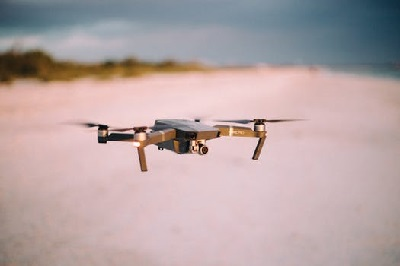
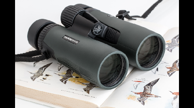

Fly with the Best!!
Manager on duty
The position
Manager on duty: (salary 100k/annum +benefits) The manager on duty shall be the personnel responsible for the assignment of the daily work orders, the hiring and firing of personnel, and general marketing and accounting for the operation of Star drone for an entire stores operation. This person must posess the following qualifications. 1. Part 107 FAA liscence. 2. 20/20 corrected Vision 3.Be able to communicate clearly and effectively in a team environment with demonstrated leadership skills with both the public and corporate populations. *Preference for EMS personnel, military, or law enforcement shall be given for their unique quality of organizational structure. 4. Must posess no felony convictions and be able to receive clearance waivers from the FAA for flights. 5.Be able to pass a urine analysis, or hair folicle pre employment drug screen. 6. Have no moving violations on their driving record for the past 3 years. 7. Able to work any shift assigned in 9 hour blocks between the hours of 30 minutes prior to sunrise and 30 minutes after sunset as these are the permissible hours of operations sans waiver from the FAA. 8. Must posess knowledge and ability to use or willingness to learn apropriate modern applications of software such like Drone deploy, Pix 4d, Photoshop, work through the cloud such like google docs, and email with general Windows Operating system knowledge, and a thorough understanding of Photogrammetry. 9. They must posess a bacculaureate from an institution of higher education within the USA. *Preference shall be given for an MBA. 10. Knowledge of general ledger, Accounts payable/ Accounts Receivable. 11. Demonstrated marketing capabilities both online and in person. 12. They must be willing to perform any duties assigned.
Contact us
Pilot in command

The Position
Pilot in Command: (salary $20/hour or 40K per annum +benefits) The pilot in command (AKA PIC) shall be the personnel responsible for all other personnel involved on any work order (themselves, visual observer, the public etc.) . They shall be the Record of flight operator and key personnel to the execution of Star drone. They shall drive the vehivle to the destination while going over verbally the preflight requirements. Prior to leaving the bay they and the visual observer shall have a pre flight checklist to fulfill. This person MUST posess the following qualifications: 1. Part 107 FAA Liscence. 2. 20/20 corrected Vision 3.Be able to communicate clearly and effectively in a team environment with demonstrated leadership skills with both the public and corporate populations. 4. Must posess no felony convictions and be able to receive clearance waivers from the FAA for flights. 5.Be able to pass a urine analysis, or hair folicle pre employment drug screen. 6. Have no moving violations on their driving record for the past 3 years. 7. Able to work any shift assigned in 9 hour blocks between the hours of 30 minutes prior to sunrise and 30 minutes after sunset as these are the permissible hours of operations sans waiver from the FAA. 8. Must posess knowledge and ability to use or willingness to learn apropriate modern applications of software such like Drone deploy, Pix 4d, Photoshop, work through the cloud such like google docs, and email with general Windows Operating system knowledge, and a thorough understanding of Photogrammetry. *Preference for a bacculaureate will be given regardless of field as it is a demonstration of trainability. 9. They must be willing to perform any duties assigned.
Contact us
Visual Observer

The position
Visual Observer: ($15/hour or 30k/annum +benefits) The visual observer shall be the second portion of the two person team missions. This persons responsibility shall be to observer the flight at all times monitoring for any safety issues that may arise especially while the Pilot in command is utilizing "first person maneuvers". They shall cordone off the landing and launching pad and handle any bystander questions that may arise during flight so the pilot can maintain focus on the drone. They should understand the inherent risk associatd with flight operations and be able to inform the public in a professional manner to maintain safety at all times.The ancillary tasks for the visual observer are to assist in the return drive and to record all flight information for the logs. This person will be responsible for washing the unit vehicle at the end of every shift. This person must posess the following qualifications: 1. Desire to eventually obtain a part 107 liscene and become a PIC. 2. 20/20 corrected vision. 3.Be able to communicate clearly and effectively in a team environment with demonstrated leadership skills with both the public and corporate populations. 4. Must posess no felony convictions. 5.Be able to pass a urine analysis, or hair folicle pre employment drug screen. 6. Have no moving violations on their driving record for the past 3 years. 7. Able to work any shift assigned in 9 hour blocks between the hours of 30 minutes prior to sunrise and 30 minutes after sunset. 8. Must posess knowledge and ability to use or willingness to learn apropriate modern applications of software such like Drone deploy, Pix 4d, Photoshop, work through the cloud such like google docs, and email with general Windows Operating system knowledge, and a thorough understanding of Photogrammetry. 9. They must be willing to perform any duties assigned.
Contact us
Dispatcher
The position
Dispatcher: ($20/hour or 40k/annum +benefits) The dispatcher shall be the key personnel responsible for intaking all phone calls, email and correspondence and assigning flight crews to work order "missions" via a computer dispatch system. They shall be responsible for maintaing the equipment logs of the crews as they come on and off shift. The dispatcher must posess the following: 1.Be able to communicate clearly and effectively in a team environment with demonstrated leadership skills with both the public and corporate populations. *Preference for EMS personnel, military, or law enforcement shall be given for their unique quality of organizational structure. 2. Must posess no felony convictions. 3.Be able to pass a urine analysis, or hair folicle pre employment drug screen. 4.Be able to multitask in a fast paced environment. 5. Be a "friendly face" for the public dressed in professional attire and manner at all times. 6. Be able to utilize a computer aided dispatch log system, nextels and general comunications devices. *Preference will be given to Social media marketing professionals adept in data analytics and social media campaigns as well as multilingual capabilities. 7. Willingness to work from 9am-5pm Monday through friday. 8.. They must be willing to perform any duties assigned.
Contact us
Accountant
The position
Accountant: ($25 per hour or 50K per annum +benefits) This person shall be the key personnel responsible for overseeing all Accounting aspects of Star drone and the final authority on any general ledger issues whether its tax or AP/AR. This person must posess the following: 1. A Certified public acountant (CPA) lisence. 2. A part 107 lisence or willingness to obtain. 3.Be able to communicate clearly and effectively in a team environment with demonstrated leadership skills with both the public and corporate populations. *Preference for EMS personnel, military, or law enforcement shall be given for their unique quality of organizational structure. 4. Must posess no felony convictions. 5.Be able to pass a urine analysis, or hair folicle pre employment drug screen. 6.. They must be willing to perform any duties assigned. 7. They must be willing to work from 9-5 monday through friday.
Contact us